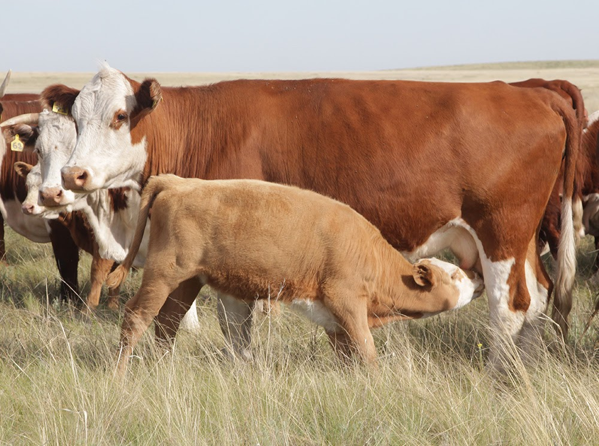
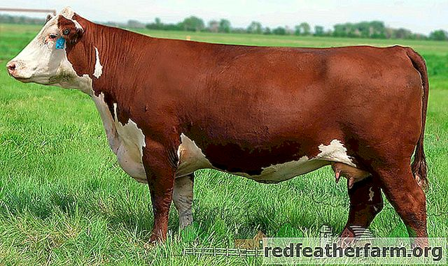

Сиыр
Сиыр, ірі қара, мүйізді ірі қара — сүтқоректілер класына жататын аша тұяқты, қуыс мүйізді, күйіс қайыратын жануарлар. Оның жабайы және қолға үйретілген түрлері бар. Қолға үйретілген Сиыр жабайы түрден тараған, ол біздің дәуірімізге дейін мыңдаған жылдар бойы Еуропа, Азия, Африка құрылықтарында кең тараған.
Сиырдың дене бітімі олардың өнімділік бағытына (сүт, ет) байланысты болады. Сүт бағытындағы Сиырдың денесі ұзын, сүйегі салыстырмалы түрде жіңішке, терісі жұқа, жұмсақ, түгі жылтыр, қарыны кең, басы мен мойыны ұзын, құрсағы мен желіні үлкен болады. Ет бағытындағы Сиырдың тұрқы төртпақ әрі кең, омыраулы, аяғы мен мойыны қысқалау, желіні кішілеу, сүтті малға қарағанда бұлшық еттері жақсы жетілген, терісі қалың әрі жұмсақ, тері астындағы май қабаты жақсы дамыған. Сиырдың барлығының да түгінің ұзындығы мен қалыңдығы бірдей, денесін тегіс жабады, тек қарыны, шабы мен желін айналасының түгі жіңішке әрі сирек болады. Мойын астындағы терісі қатпарланған, мүйіздері қуыс әрі қысқа, тұмсығының алдыңғы жағында мұрын айнасы болады. Асқазаны төрт камералы (месқарын, жұмыршақ, қатпаршақ, ұлтабар), соның арқасында олардың көп мөлшерде ірі сабақты шөпті қорытуға мүмкіндігі бар. Жағының жоғарғы жағында күрек тістері болмайды, желіні төрт емшекті.
Сиырдың жынысы мен жасына байланысты жас төлін — бұзау, алты айға толғанға дейінгі төлін (еркек, ұрғашысын) — баспақ, бір жастағы төлін (еркек, ұрғашысын) — тайынша, бір жастағы ұрғашысын — қашар, бір жас пен екі жас аралығындағы ұрғашысын — құнажын, екі жас пен үш жас аралығындағысын (еркек, ұрғашысын) — дөнежін, еркегін — бұқа, піштірілген еркегін — өгіз деп атайды.

Сиырдың етті тұқымдарының ет өнімділігі жоғары, сүт бағытындағы Сиырларға қарағанда тез семіреді және шығымы жоғары сапалы ет береді. Бордақыланған Сиырлар майды ішкі органдарына, тері астына ғана емес, жұқа қабаттар түрінде ет талшықтарының арасына да (мәрмәр түстес ет) қалыптастырады. Бордақыланған жас малдардың еті өте құнды, дене тіндері және олардың хим. құрамы жасына байланысты өзгеріп отырады. Сойыс шығымы тұқымына байланысты 48 — 70% аралығында. Сиырдың қыстағы басты азығы пішен, сүрлем және құрама жем, ал жазда жайылым шөбі және қосымша азық (сүрлем, құрама жем).
Сиырдың сүті бағалы тамақ өнімі және тамақ өнеркәсібінің негізгі шикізаты. Сүт және оның өнеркәсіптік қалдықтары а.ш. малдарының төлдерін тамақтандыруда кеңінен пайдаланылады. Ал етінің тамақтық сапасы жоғары, калориясы мол, жеңіл қорытылады және диеталық қасиеті бар. Сойылған Сиырдан алынатын әр түрлі сортты терісінің өнеркәсіптік маңызы зор. Сойылған малдың қалдықтарынан қайта өңдеу арқылы, ет-сүйек, сүйек, қан ұнтақтары, эндокринді препараттар, стеарин, желім, сабын, т.б. алынады. Кейбір тұқымдардың бұқалары мен өгіздерін арба, шана тартуға пайдаланады.
